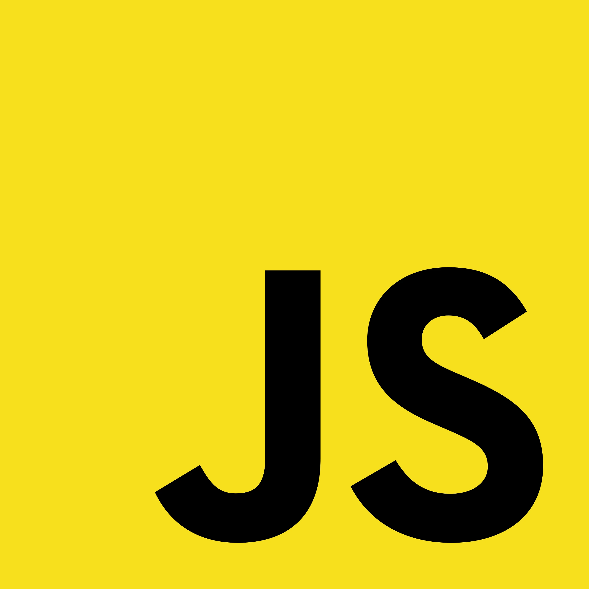

IGNACIO GIL GARZÓN
Ingeniero Informático
Mis aptitudes de Front-end
-

-

- 
-

-

-

Mis aptitudes de Back-end


Soy un desarrollador madrileño, graduado en Ingeniería Informática, con gran interés por la Inteligencia Artificial, el Análisis de Datos y el Diseño web.
Busco no cerrarme ninguna puerta, elaborando proyectos con diferentes tecnologías para aprender un poco de todo.
En esta página, expondré algunos de los proyectos que he realizado, tanto de forma individual como en equipo, y que me han ayudado a crecer como desarrollador.